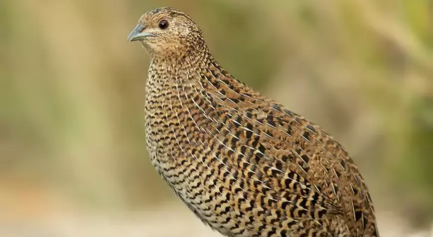

Bıldırcın (Coturnix coturnix), küçük yapısı ve hızlı hareketleriyle tanınan, dünyanın birçok bölgesinde görülen değerli bir kuş türüdür. Ortalama 16–20 cm uzunluğa ulaşan bıldırcınlar, kahverengi ve gri tonlardaki tüyleriyle doğada mükemmel kamuflaj sağlar. Toprakta yaşayan bu kuşlar, tohum, tahıl ve küçük böceklerle beslenir; kısa ama güçlü kanatları sayesinde hızlı uçuşlar yapabilirler. Sosyal yapılarıyla sürü halinde yaşayan bıldırcınlar, yumurtaları ve eti nedeniyle insanlar tarafından da yetiştirilir. Doğru bakım koşullarında 4–6 yıl yaşayabilen bıldırcın, yalnızca pratik faydalarıyla değil, aynı zamanda zarif görünümü ve çevik hareketleriyle de kuş dünyasında özel bir yere sahiptir.